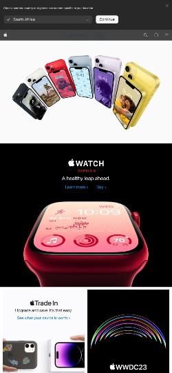

Visual Hierarchy
Google's search page exemplifies visual hierarchy through the use of a prominent search bar, larger text for the logo and search suggestions, and smaller text for the links. The use of colors also draws attention to the search bar and logo, making them the main focal points of the page.
Fitt's Law
Amazon
Visit AmazonAmazon's mobile homepage exemplifies Fitt's Law by placing large, easy-to-tap buttons for commonly-used features such as the search bar, cart, and menu. The use of negative space also makes it easier to tap on these buttons without accidentally tapping on something else.
Rule of Thirds
Apple
 Visit AppleApple's mobile homepage uses the rule of thirds to create a visually-pleasing layout. The main image takes up two-thirds of the screen, with the text and buttons taking up the remaining third. This creates a balanced composition that draws the eye to the main image.